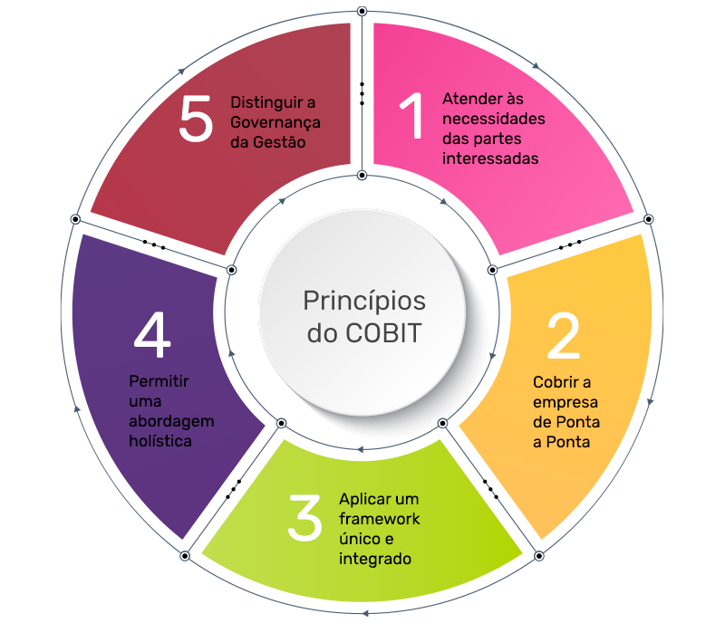

Normas ISO/IEC
Trabalhamos com as normas ISO/IEC 27001 e 27002 para garantir a gestão da segurança da informação nas organizações.

Monitoramento 24/7 para proteger sua organização contra ameaças cibernéticas.
Trabalhamos com as normas ISO/IEC 27001 e 27002 para garantir a gestão da segurança da informação nas organizações.
Implementamos o NIST CSF para gerenciar riscos de segurança cibernética com as funções: Identificar, Proteger, Detectar, Responder e Recuperar.
Aplicamos o framework COBIT para governança e gestão de TI com foco em eficiência e conformidade.

Ferramenta,Banco de dados,MYSQL

recursos que têm a finalidade de compartilhar trechos de códigos entre diferentes aplicações.
Uma equipe especializada em segurança da informação comprometida com a proteção de seus dados.
Email: contato@soc.com | Telefone: (XX) XXXX-XXXX